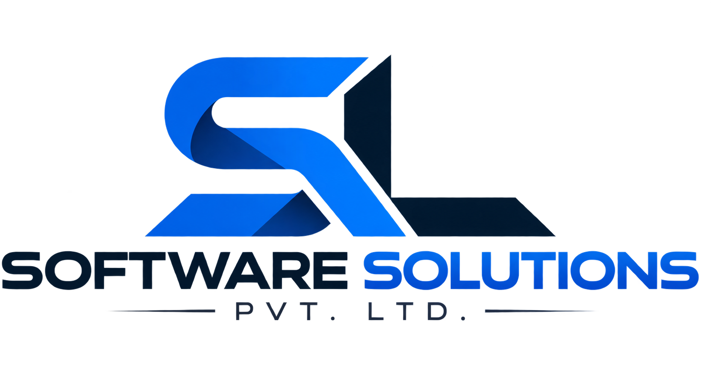

Custom CRM
Business-focused CRM solutions designed around workflows, customer relationships and operational requirements.

ESTABLISHED 2000 · IT SERVICES & CONSULTING
Frontline Login System Private Limited delivers technology solutions across software, cloud, cybersecurity, data and digital operations.
Engineering practical solutions for evolving technology needs.
FRONTLINE LOGIN SYSTEM
Frontline Login System Private Limited is an Indian IT services and technology company incorporated in 2000. Its public technology footprint spans software and application services, cloud solutions, cybersecurity, data analytics, CRM, IoT and technology consulting.
The company’s approach is centered on understanding business requirements and delivering tailored technology solutions rather than a one-size-fits-all model.
CAPABILITIES
Business-focused CRM solutions designed around workflows, customer relationships and operational requirements.
Assessment, planning and migration support for organizations moving workloads and applications to cloud environments.
Security-focused services covering risk, protection, monitoring and resilience for digital environments.
Data-driven solutions designed to turn operational information into useful business insights.
Connected technology and asset-tracking concepts for visibility, monitoring and operational efficiency.
Testing support for application quality, reliability, performance and release readiness.
SELECTED CAPABILITIES
The portfolio below expands on solution areas publicly associated with Frontline Login System, including CRM, cloud migration, IoT and data analytics.
Tailored customer-management solutions built around workflows, relationship management, reporting and operational visibility.
Structured cloud-transition planning for organizations modernizing infrastructure, applications and operating models.
Connected technology concepts that help organizations monitor assets, improve visibility and make operational information more accessible.
Data platforms and analytics approaches that turn operational information into actionable business intelligence and maintenance insights.
MAKE TECHNOLOGY EASIER TO SEE
Concept visuals help visitors understand the kinds of technology environments, connected systems and digital operations represented by the portfolio.
Cloud platforms, data flows, secure applications and operational visibility working together.
Applications, infrastructure, analytics and security brought together through a unified technology layer.
IoT, monitoring and data intelligence supporting better visibility across physical and digital environments.
BUSINESS CONTEXT
Customer relationships, business applications and data-driven operations.
Cloud modernization, connected assets and operational intelligence.
Technology platforms, integration, analytics and process improvement.
Scalable software, security and technology foundations for growth.
THE FRONTLINE STANDARD
A professional engagement model built around understanding, engineering, quality and long-term support.
Technology decisions begin with the outcome the organization needs to achieve.
Solutions are structured for maintainability, security, scalability and practical use.
Clear requirements, defined milestones and focused communication throughout an engagement.
Solutions are considered as part of an evolving technology environment, not as isolated deployments.
TECHNOLOGY ECOSYSTEM
HOW THE PIECES FIT TOGETHER
TECHNOLOGY ECOSYSTEM
Technologies publicly associated with Frontline’s online footprint include:
Start with the business requirement, technical environment and desired outcome.
Shape a practical solution around the organization's priorities and constraints.
Implement, test and refine technology with attention to reliability and usability.
Continue improving the solution as business and technology requirements evolve.
CAREERS
Explore opportunities with Frontline Login System and follow the company's official LinkedIn presence for job openings and updates.
LET'S CONNECT
Contact details below are based on the company's publicly indexed legacy website and should be reconfirmed with the company before launch.
1st Floor, 264–265, Dr Annie Besant Rd, Municipal Colony, Worli Shivaji Nagar, Worli, Mumbai, Maharashtra 400025